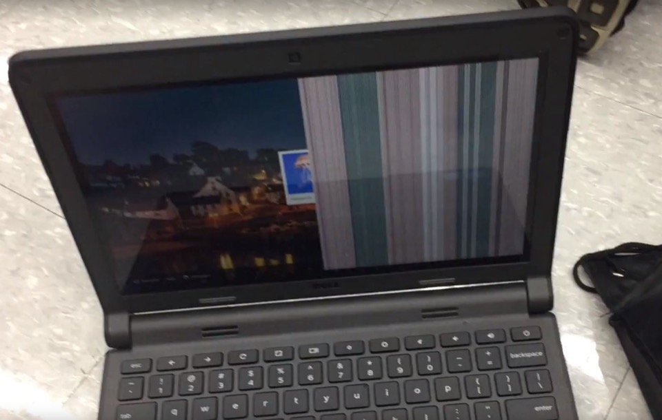
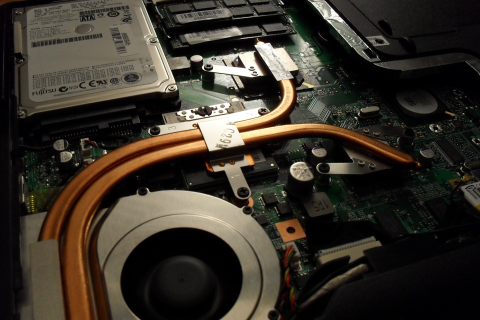
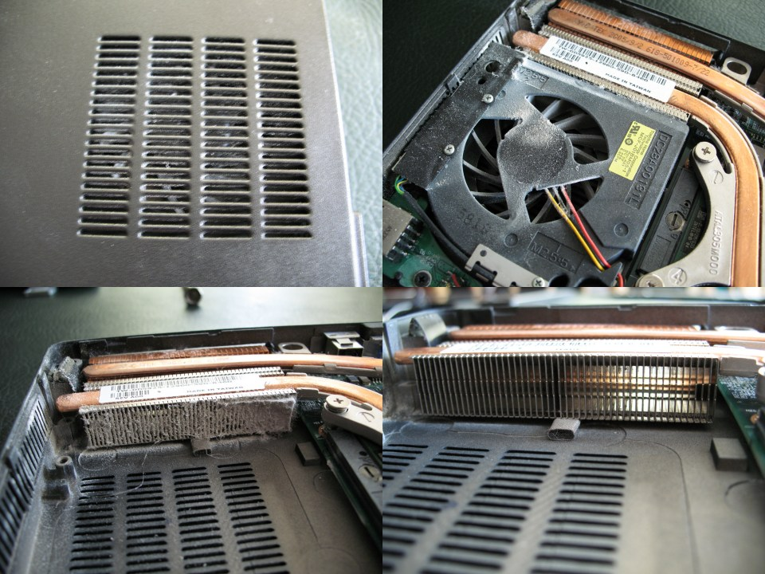

Diagnose a laptop’s screen, cooling and inputs
Use preboot and external comparisons to decide when a laptop needs a display cable, cooling service or input repair.
A working or repairable spare laptop, its exact service manual, a known-good external screen and compatible cable, a plain USB keyboard, good light and a notebook. A Dell example is used for preboot tests. Framework Laptop 13 is the physical service example. You can use the recorded cases without opening a laptop.
Is there an image before the operating system starts?
Separate the parts of the display path. The graphics system creates picture data. The internal cable carries that data to the panel and may also carry display power and controls. A typical laptop LCD uses a backlight so you can see the image. An OLED panel emits its own light. The lid sensor can send the laptop to sleep as the lid approaches the closed position.
Watch a cold start. Record whether the internal display shows firmware, whether it only fails after sign-in and whether a supported external monitor shows a picture. Try the monitor and cable on another source first. A booting laptop may send early firmware video only to its internal screen.
On a supported Dell with the machine off, follow Dell’s instructions for holding D and pressing Power. Look for the same lines or dark zones through the colour fields. Stop using the laptop’s documented exit. A clean pass confirms the screen rendered those test patterns under those conditions. An intermittent cable can still fail later.
On an LCD, a faint image visible with a light held at an angle is a clue to the backlight path. If normal movement changes the fault, record the angle without flexing or forcing the lid. Remove magnetic accessories while checking an unexpected sleep or blanking complaint.

Photo by Atomicdragon136, resized. Original photo · CC BY-SA 4.0.


Photo by Ogidya, resized. Original photo · CC BY 4.0.

Watch the manufacturer’s test video · Record where the first colour appears and how the test differs from watching a Windows startup. Dell Support · Run LCD BIST on a Dell laptop · Dell’s written procedure.
If the internal path remains suspect, isolate external power and the internal battery using the exact model procedure before touching the display plugs. For a compatible Framework Laptop 13, the manufacturer shows how to remove the bezel, free the display harness and lift the panel without pulling on the cable. Compare panel identity, cable routing and retaining tape before reassembly. Retest brightness, sleep/wake and normal lid travel. Framework Laptop 13 display and hinge guides.
If the symptom points to the internal display path, P95 shows the panel-side connector and how to compare an exact donor cable and panel.
Separate cooling hardware from a heavy workload
When considering a used replacement, P94 shows how to match its assembly and prove it under the same load.

Photo by Kristoferb, resized. Original photo · CC BY-SA 3.0.


Photo montage by Dale Mahalko. Original photo · CC BY-SA 3.0.

On a hard surface, note the room temperature, AC or battery state, performance profile and CPU use when the complaint occurs. Use a short normal workload. Stop at a manufacturer thermal warning, abnormal odour or unexplained shutdown.
If available, run the OEM fan diagnostic. Dell describes F12 → Diagnostics on supported models and a separate Fan test. Record the result code. A passing fan can coexist with restricted airflow or high software load. Fan speed may intentionally rise during the diagnostic.
With the laptop powered down and isolated, inspect its intake, fins and fan connector if you can safely reach them by the service manual. Clean or replace only what the evidence points to. Follow the exact model’s thermal-material requirements and screw order if the heatsink needs lifting. Compare the same workload, room and profile after reassembly.
Watch a service demonstration · Use the heat sink fan removal and replacement clips to identify the fan plug and fastener order on a ThinkPad T480. Look up your own machine’s instructions before removing its cooling assembly. Lenovo T480 hardware service videos · Dell fan and thermal diagnosis.
Worked comparison. In a training record, the same five-minute workload reached 89 °C with loud fan noise before cleaning and 76 °C after cleaning, both at 22 °C room temperature and near the same CPU load. The result supports improved heat removal after the observed obstruction was cleared. Those temperatures are example readings. Apply your model’s own operating limits.
Check one input complaint across two environments
For a group of dead keys, test the same physical keys in the normal system and an independent manufacturer diagnostic that exercises those keys, when available. Compare with a known-good USB keyboard and check keyboard layout and accessibility settings. With power and battery isolated, look up the cover and flex release for the model. A ribbon left partly inserted can take out a column or row. After work, test every key, touchpad click and gesture, and repeat the sleep/wake and charging checks if those parts were disturbed. Framework keyboard service photos.
Decide what the evidence justifies
The display looks clean in self-test and fails after sign-in
Check the driver, display settings and use a supported clean software test before replacing a panel. Save photos of the working preboot and the failing state with the same lid position.
The external image is stable and the internal lines change when the lid moves
Inspect the internal path and strain points with power isolated. A new cable may be a good test if the model permits a documented substitution. Record whether the original symptom returns at the same angle.
The fan diagnostic passes and an application keeps CPU use at 95% while idle
Investigate the application or background workload. Recheck temperature and fan speed at a known comparable load before opening the case.
Keep a separate job record for the display, cooling or input case you can reproduce. Include which tests ran before opening and what independent result confirmed the outcome. The Australian computer-repair competency uses multiple known faults, manufacturer procedures, functional checks and reporting. UEEEC0055 competency · C16 repair job record.